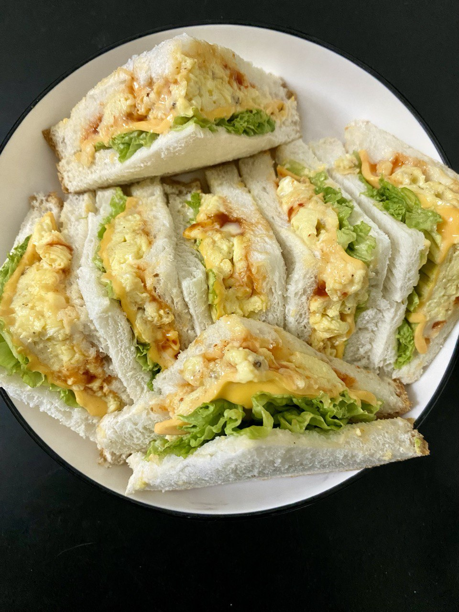

BIODATA
Iced chocolate & strawberry matcha Iced cheese creme matcha Egg sandwich Click on the sandwich to go to a new page and read more about the topic: Burger
Welcome to this page, where you’ll get to know more about me. My name is Nur Hazwani, but most people call me Wani, especially my close friends. I was born in Gerik, Perak, on 16th January 2004, and this year I’m officially 20 years old! I’m also the youngest in a family of six siblings,typical youngest child vibes, right?
When it comes to food, I’m definitely Team Spicy! Spicy food has my heart over anything sweet like cupcakes or donuts. As for drinks, I’m not a big fan of sugary drinks unless I’m really craving them. Sour drinks, though? That’s a big yes for me.I’m always up for those!
Oh, and I’m what you’d call a cafe hunter. It means I love exploring aesthetic and trendy cafes, snapping pretty pictures, and enjoying the vibe. But here’s a little plot twist,I don’t drink coffee! I usually just order matcha or chocolate when I visit cafes. So yeah, I’m a cafe hunter who’s Team No Coffee!
FAVOURITE
FOOD
&
DRINK

HIKING !🌄
My hobby, whenever I have free time, is hiking. I feel that hiking brings a lot of benefits, and it’s definitely better than just sitting around doing nothing. At least the tiredness from hiking is rewarded with beautiful views from the top of the mountain.
I’m still a newbie in hiking, so far I’ve only hiked mountains with moderate heights. But I have the intention and goal to hike a higher and more famous mountain in my area, which is Gunung Kerunai. How amazing it would be to see the “carpet clouds” view right in front of my eyes it’s truly my dream!
SUNSEST🌇
Taking pictures of sunsets is one of my hobbies that I just can’t resist. Whenever I see the sun starting to set or the sky turning orange, my hands automatically reach for my phone to capture the moment. Sometimes, I even go to specific spots just to watch the sunset and take pictures. Why? Because during that time, I feel so calm, and all my problems seem to fade away for a while.
So, I include taking pictures of sunsets as one of my hobbies. It might seem unusual or different compared to others who have more active hobbies, but I don’t mind. As an introvert, most of my hobbies don’t really involve other people. And for me, that’s more than enough to make me happy.